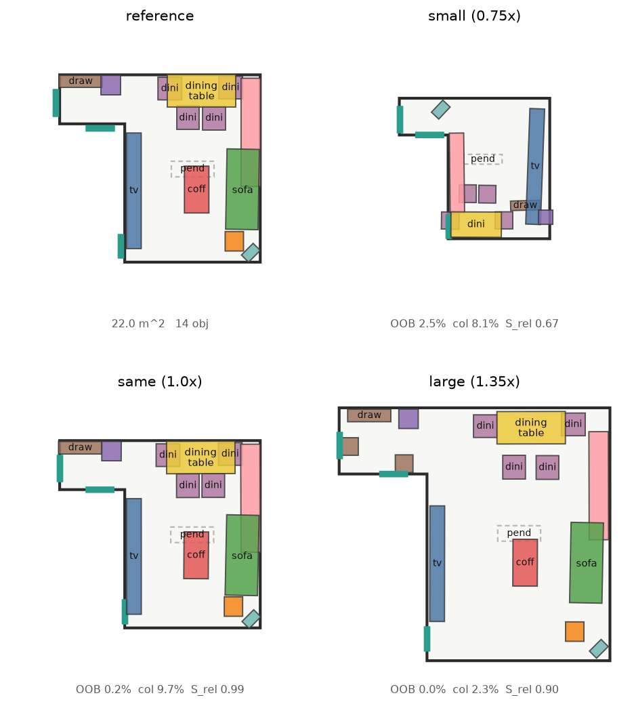

ReRoom · 目前的做法
參考導向的 3D 室內設計 retargeting — 現行 shipped pipeline(中文說明)
問題:給一張使用者喜歡的房間設計、跟一個形狀 / 大小可能完全不同的目標房間,自動把設計「搬」過去 — 保留原本的關係與 motif,但佈局要符合新房間的幾何。
核心設計:設計不是「座標」,而是「關係 + 彈性」。αij(關係彈性)決定每對物件之間哪些距離該保留、哪些可以隨房間變。搬房間時,不動的東西照搬,彈性大的自動放鬆。
現在的做法(流程圖)
橘色框 = 相對原本(PDF / 早期實作)有調整的關鍵步驟:資產替換前置、Polish 步驟恢復 eq (37) 但用 anchor L2 版本以免打散 coherence。
每一步在做什麼
1–3. 意圖抽取
- 感知:從一張影像用 MIDI-3D 抽出物件框、房間輪廓;或直接吃 3D-FRONT 的 graph 當 oracle
- 意圖圖 + α:把場景整理成 (物件, 關係, motifs) 三層。αij 由一個 MLP 學,表示每條關係「該有多剛」— 沙發和茶几之間的距離很剛,沙發和邊角櫃之間彈性大
4–5. 挑選 · 縮小
- Summarise:如果目標房比 reference 小,先按面積 / 密度預算刪掉整組 motif(例如刪掉整組對話沙發)
- Substitution(前置):每件 keep 的家具換成 bank 裡最接近但能塞進去的真實資產。順序關鍵 — 這一步在 flow 之前 做,避免 flow 被要求塞放不下的家具、再被 collision guidance 推散
6. 生成核心(flow + in-sampling guidance)
- Flow Transformer 從高斯噪音出發,50 步 ODE 積分,每步對每個物件預測 velocity
- 意圖圖 (relations + α) 進入每條 edge 的 attention bias,以及每個物件的 conditioning 特徵
- In-sampling guidance:每步都算 x1_hat 的可行性(Ebound + Ecol + Eclear + 靠牆物件的 wall_pull),把 feasibility gradient 塞進 ODE trajectory — 這是 PhyScene 的 classifier-guidance 精神移植到 flow matching
- 產出 k = 16 個候選 layouts
7. Polish(輕量投影)
- 對每個候選跑 25 步 Adam,對 TorchProblem 全能量做梯度下降,freeze_yaw(朝向由 flow 決定,polish 只改位置)
- anchor L2:每個位置對「sampled 位置」加 L2 束縛,強度 100 — 這是共存的關鍵:Ecol 不會把同 motif 對推散,只能小幅修正到牆邊 / 出界的可行性殘留
- PDF eq (37) 的 constraint projection 用這個「共存」形式恢復
8–9. 生長 · 排名 · 輸出
- Population:如果目標房比 reference 大,依 co-occurrence 模型提議新家具;
_vet_additions 守門 — 加入後 layout 成本不能變才收
- Ranking:全 7 個能量(含 Erel、Estyle、Eedit)算 E(Y),k 個候選挑最低
- 輸出可編輯的 3D 場景
實際輸出

同一份 22 m² 客廳 reference,分別放入 0.75× / 1.0× / 1.35× 房間,用現在的 shipped pipeline 輸出。原尺寸幾乎完全複製 reference(Srel 1.00);縮小房 wall 邊物件都貼牆;放大房殘留 ~10 cm 浮空是訓練層限制,單靠 guidance + polish 無法完全消除。
已知限制:大房間(>1.3×)wall 物件仍有 ~10–20 cm 平均浮空;這是訓練層的問題 — flow 學到的是「照 reference 等比擺」,牆位置變了它不會自動重新貼牆,而 in-sampling guidance 只能軟推。修這個要在訓練 loss 上加約束,測過的候選方案(wall_pos_loss normalized 空間版)實測未改善;wall_metric_loss metric 空間版趨勢對但幅度小。仍在 iterate。